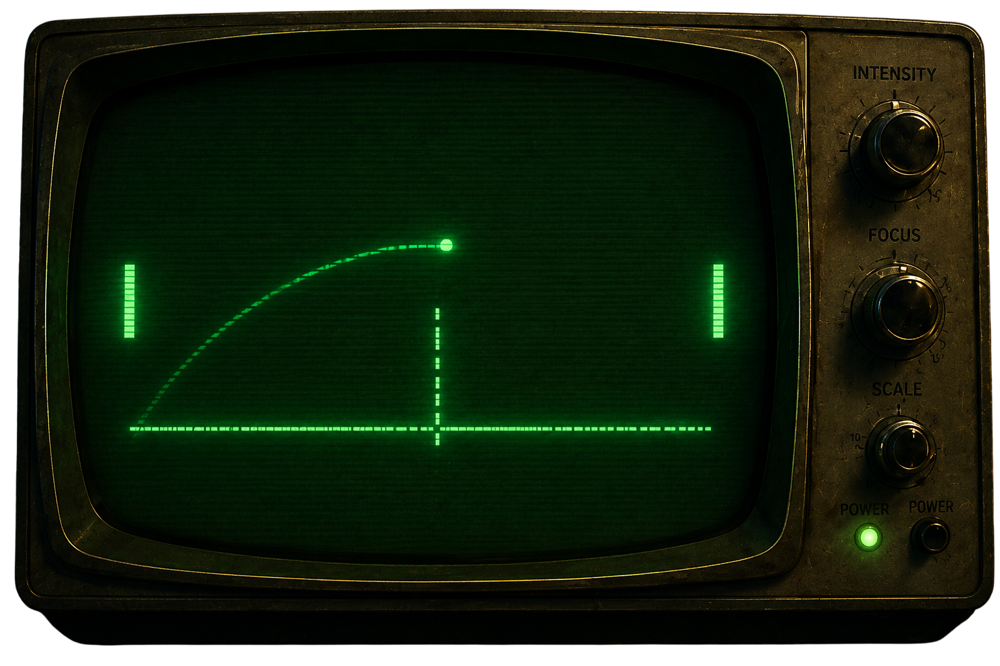
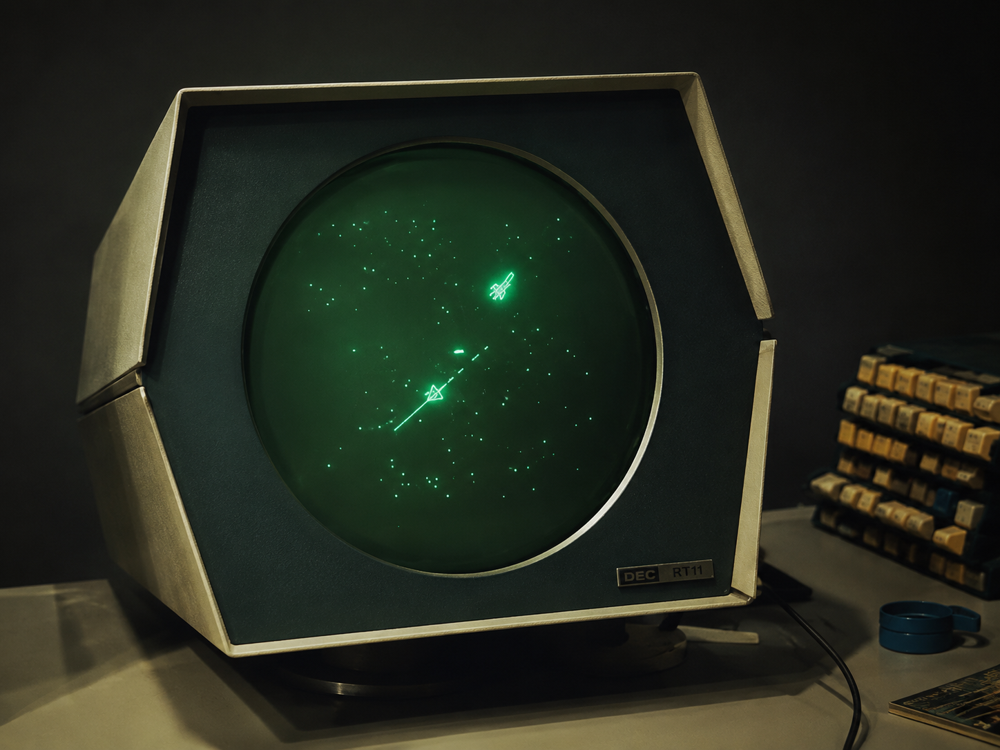
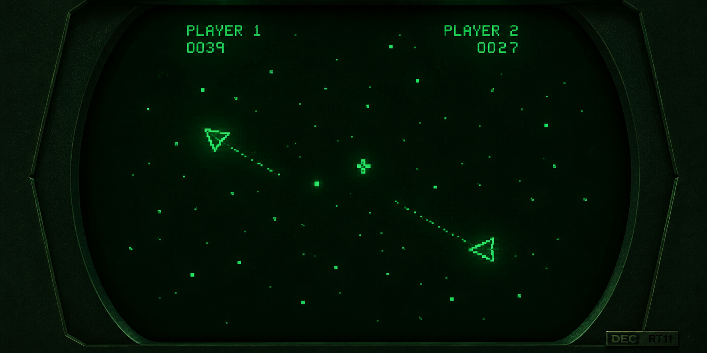
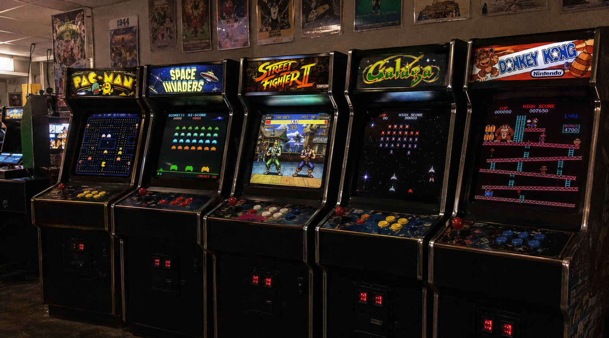
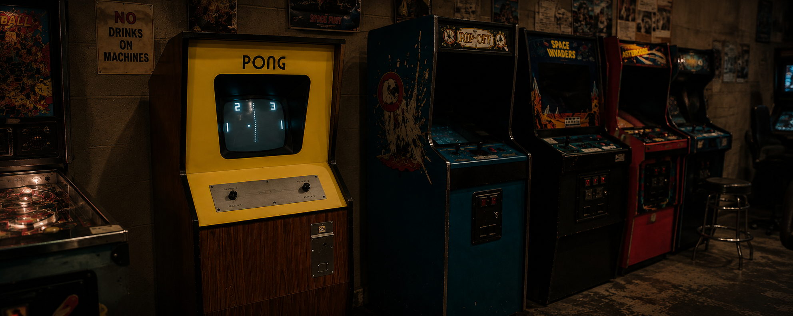
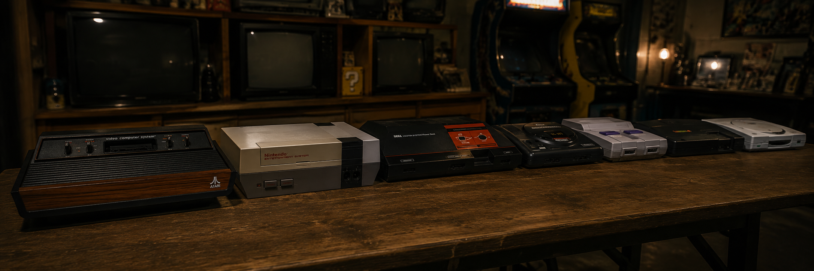
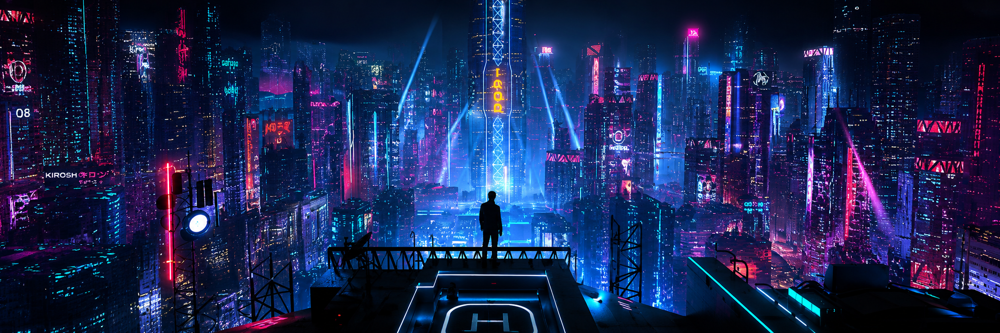

A HISTÓRIA
DOS GAMES
De experimentos em laboratórios militares ao fenômeno cultural global. Explore a jornada que transformou código em diversão. Deslize para iniciar sua jornada pela linha do tempo dos games.
DÊ SCROLL PARA COMEÇAR
ERA 01
A ERA DO FÓSFORO
Antes dos gráficos avançados e dos consoles, os primeiros jogos nasceram em laboratórios, entre cientistas e engenheiros curiosos.
Em 1958, William Higinbotham criou o Tennis for Two, um jogo simples exibido em um osciloscópio, simulando o movimento de uma bola em uma quadra de tênis.
Ali, em meio a fios, válvulas e fósforos verdes, nasceu a faísca que mudaria o mundo.
Em 1958, William Higinbotham criou o Tennis for Two, um jogo simples exibido em um osciloscópio, simulando o movimento de uma bola em uma quadra de tênis.
Ali, em meio a fios, válvulas e fósforos verdes, nasceu a faísca que mudaria o mundo.
VOCÊ ESTÁ NA LINHA DO TEMPO.
DESCUBRA COMO TUDO EVOLUIU.
DESCUBRA COMO TUDO EVOLUIU.
1958 - TENNIS FOR TWO

DADOS DO EXPERIMENTO
DISPOSITIVO: OSCILOSCÓPIO ANALÓGICO
CRIADOR: WILLIAM HIGINBOTHAM
LOCAL: BROOKHAVEN NATIONAL LABORATORY
ANO: 1958
ERA 02
A ERA DOS COMPUTADORES
Nos anos 60, os computadores deixaram de ser apenas máquinas de cálculo e passaram a ser laboratórios de ideias.
Em universidades e centros de pesquisa, programadores começaram a criar jogos como experimentos interativos.
Foi assim que nasceu uma nova cultura: a dos hackers, dos curiosos, dos visionários.
Em universidades e centros de pesquisa, programadores começaram a criar jogos como experimentos interativos.
Foi assim que nasceu uma nova cultura: a dos hackers, dos curiosos, dos visionários.
1962 - SPACEWAR!

Spacewar! foi um dos primeiros jogos desenvolvidos para computadores.
Nele, naves espaciais duelavam em gravidade zero.
O jogo rodava em máquinas enormes, mas a ideia era gigante.
Nele, naves espaciais duelavam em gravidade zero.
O jogo rodava em máquinas enormes, mas a ideia era gigante.

ERA 03
A ERA DOS FLIPERAMAS
Nos anos 70, os jogos deixaram de ser experimentos e se tornaram diversão pública.
Nasceram os fliperamas, máquinas gigantes que conquistaram salões, shoppings e corações.
Empresas como Atari, Namco e Taito deram início à indústria que conhecemos hoje. Era o começo da revolução.
Empresas como Atari, Namco e Taito deram início à indústria que conhecemos hoje. Era o começo da revolução.
1972 - JOGOS CHEGAM AOS ARCADES

DESTAQUES DA ERA
EXPLOSÃO DOS FLIPERAMAS PELO MUNDO
JOGOS ICÔNICOS: PONG, PAC-MAN, SPACE INVADERS
COMPETIÇÃO, HIGH SCORES E CULTURA ARCADE
O JOGO SE TORNA UM FENÔMENO CULTURAL
CURIOSIDADE
Space Invaders (1978) foi o primeiro jogo a causar um verdadeiro "boom" global, gerando filas e até falta de moedas
ERA 04
A ERA DO PONG
1972 - PONG

DESTAQUES DA ERA
VENDEU MAIS DE 19 MIL UNIDADES NO PRIMEIRO ANO
CRIOU O GÊNERO ESPORTE VIRTUAL
POPULARIZOU OS ARCADES
DEU ORIGEM À ATARI
CURIOSIDADE
O criador do Pong, Allan Alcorn, recebeu apenas um bônus de US$ 1.000,00 pelo jogo que ajudou a construir um império.
VOCÊ PODE
JOGAR O PONG
VER RANKING
VER CONQUISTAS
ERA 05
A ERA DOS
CONSOLES
Nos anos 80, os videogames deixaram os fliperamas e chegaram às salas do mundo todo.
Consoles como Atari 2600, Nintendo Entertainment System e Sega Master System levaram diversão, desafios e aventuras para uma nova geração.
Consoles como Atari 2600, Nintendo Entertainment System e Sega Master System levaram diversão, desafios e aventuras para uma nova geração.
UM NOVO JEITO DE JOGAR.
UMA NOVA GERAÇÃO DE FÃS.
UMA NOVA GERAÇÃO DE FÃS.
ANOS 80 - CONSOLES MAIS POPULARES

O QUE MARCOU
CONSOLES ACESSÍVEIS
JOGOS ICÔNICOS
FRANQUIAS LENDÁRIAS
DIVERSÃO EM CASA
CULTURA GAMER EM EXPANSÃO
CONSOLES DESTA ERA
ATARI 2600 (1977)
NINTENDO ENTERTAINMENT SYSTEM - NES (1983)
MASTER SYSTEM (1986)
MEGA DRIVE (1988)
CURIOSIDADE
Super Mario Bros. (1985) ajudou a salvar a indústria de games após a crise de 1983 e se tornou um dos jogos mais vendidos de todos os tempos!
ERA 06
A ERA MODERNA
Nos anos 2000 em diante, os games ultrapassaram fronteiras, se conectaram online e se tornaram uma das maiores indústrias do planeta.
Gráficos realistas, mundos abertos, inteligência artificial, eSports e comunidades globais marcaram uma nova era.
Mais do que jogar, agora vivemos os games.
Gráficos realistas, mundos abertos, inteligência artificial, eSports e comunidades globais marcaram uma nova era.
Mais do que jogar, agora vivemos os games.
O MUNDO MUDOU.
OS GAMES TAMBÉM.
OS GAMES TAMBÉM.
ANOS 2000+ - UM UNIVERSO DE POSSIBILIDADES

DESTAQUES DA ERA
MUNDOS ABERTOS E IMERSIVOS
GRÁFICOS FOTORREALISTAS
JOGOS ONLINE E MULTIPLAYER
ESPORTS E COMPETIÇÕES GLOBAIS
REALIDADE VIRTUAL E AUMENTADA
NÚMEROS
3.2B+
JOGADORES NO MUNDO
JOGADORES NO MUNDO
US$ 200B+
MERCADO GLOBAL
DE GAMES
MERCADO GLOBAL
DE GAMES
GÊNEROS EM ALTA
FPS / SHOOTERS
RPG / AVENTURA
BATTLE ROYALE
MOBA
SIMULAÇÃO